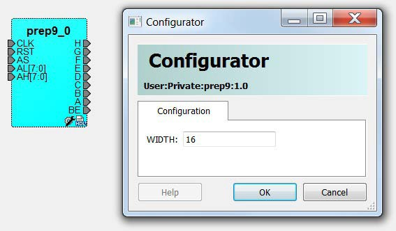

3.4 Creating and Verifying Designs
(Ask a Question)Create your design with the following design capture tools:
- Create SmartDesign
- System Builder (SmartFusion 2 and IGLOO 2 only)
- Create HDL
- Create SmartDesign Testbench (optional, for simulation only)
- Create HDL Testbench (optional, for simulation only)
- Verify Pre-synthesized Design
3.4.1 SmartFusion 2 and IGLOO 2 Tools
(Ask a Question)The following topics describe System Builder and how to use the MSS in your SmartFusion 2 designs.
3.4.1.1 System Builder
(Ask a Question)System Builder is a graphical design wizard that allows you to enter high-level design specifications for SmartFusion 2 or IGLOO 2.
System Builder takes you through the following steps:
- Asks basic questions about your system architecture and peripherals
- Builds a correct-by-design complete system
To start System Builder:
- In the Design Flow window, click System Builder > Run.
- In the Enter a name for your system dialog box, enter a name for the system you want to build.
- Click OK. The System Builder Device Features page appears.
System Builder automatically configures the silicon features you select. To complete the design, add your custom logic or IP and connect them to your System Builder-generated design.
For a complete family-specific explanation of the tool, see the SmartFusion 2 System Builder documentation or the IGLOO 2 System Builder documentation.
3.4.1.2 Using the MSS in Your SmartFusion 2 Designs
(Ask a Question)3.4.1.2.1 Instantiating a SmartFusion 2 MSS in Your Design
(Ask a Question)- Arm® Cortex®-M3
- Embedded nonvolatile memory (eNVM)
- Ethernet MAC
- Timer
- UART
- SPI
You can instantiate an MSS into your design from the New Project Creation Wizard when you start a new SmartFusion 2 project, or from the Design Flow window after you have created a new project.
Instantiating a SmartFusion 2 MSS from the New Project Creation Wizard
- Enable Use Design Tool (under Design Templates and Creators) and click to select SmartFusion 2 Microcontroller Subsystem (MSS) from the list.
Not Using a Design Tool when You Create a Project
If you decide not to use a Design Tool when you created your project:
- Expand Create Design in the Design Flow window and double-click Configure MSS.
- When the Add Microcontroller Subsystem dialog box appears, enter your design name and click OK. A SmartDesign Canvas appears, with the MSS added to your project. Double-click the MSS to view and configure MSS components.
3.4.1.2.2 Configure the SmartFusion 2 MSS
(Ask a Question)Documents for specific SmartFusion 2 MSS peripherals are available on the Peripheral Documents web page.
The SmartFusion 2 MSS Configurator in the following figure contains the following elements. Double-click an element in the MSS to configure it. If a check box is available, check it to enable the element in your design or uncheck it to disable the element in your design.
MSS ARM Cortex-M3 Peripherals
- MSS CAN
- MSS Peripheral DMA (PDMA)
- MSS GPIO
- MSS I2C
- MSS Ethernet MAC
- MSS DDR Controller (MDDR)
- MSS MMUART
- MSS Real Time Counter (RTC)
- MSS Embedded Nonvolatile Memory (eNVM)
- MSS SPI
- MSS USB
- MSS Watchdog Timer
Fabric Interfaces
- MSS Fabric Interface Controllers (FICs)
Additional Information
- MSS Cache Controller
- MSS DDR Bridge Controller
- MSS AHB Bus Matrix
- MSS Clocks Configurator (MSS CCC)
- MSS Interrupts Controller
- MSS Reset Controller
- MSS SECDED Configurator
- MSS Security Configurator
The MSS generates a component that is instantiated into your top-level design.
3.4.1.2.3 Generate SmartFusion 2 MSS Files
(Ask a Question)See the MSS Configurator help for more information on generating SmartFusion 2 MSS files.
Click the Generate Component button to create your SmartFusion 2 MSS files. The MSS Configurator generates the following files:
- HDL files for the MSS components, including timing shells for synthesis - HDL files are automatically managed by the Libero SoC and passed to the Synthesis and Simulation tools.
- EFC File: Contains your eNVM client data - The EFC content is included in your final programming file.
- Firmware drivers and memory maps are exported
into the
<project>\firmware\directory - Libero SoC automatically generates a Software IDE project that includes your Firmware drivers. If you are not using a software project automatically created by Libero, you can import this directory into your Software IDE project. - Testbench HDL and BFM script for the MSS design: These files are managed by Libero SoC and automatically passed to the Simulation tool.
- PDC files for the MSS and the top-level design: These files are managed by Libero SoC and automatically integrated during Compile and Layout.
3.4.2 Create SmartDesign
(Ask a Question)SmartDesign is a visual block-based design creation and entry tool for instantiating, configuring, and connecting Microchip IPs, user-generated IPs, and custom/glue-logic HDL modules. This tool provides a canvas for instantiating and stitching together design objects. The result from SmartDesign is a design-rule-checked and automatically abstracted synthesis-ready HDL file. A generated SmartDesign can be the entire FPGA design or a component subsystem to be re-used in a larger design.
The following design objects can be instantiated in the SmartDesign canvas:
- Microchip IP Cores
- User-generated or third-party IP Cores
- HDL design files
- HDL + design files
- Basic macros
- Other SmartDesign components (*.cxf files). These files can be generated from SmartDesign in the current Libero SoC project, or they can be imported from other Libero SoC projects.
- Re-usable design blocks (*.cxz files) published from Libero SoC. For more information, see the SmartDesign User Guide .
| Direct Cores That Cannot be Used in Batch Mode | Direct Cores That Cannot be Used in Batch Mode |
|---|---|
| CoreAXI4SRAM | CoreFIFO |
| CoreCIC | CoreFFT |
| CoreCordic | CoreFIR_PF |
| CoreABC | CoreRSDEC |
| CoreEDAC | CoreRSENC |
| CoreDDS |
3.4.2.1 Create New SmartDesign
(Ask a Question)- From the
File menu, choose New >
SmartDesign in the Design Flow window or double-click
Create SmartDesign. The Create New SmartDesign dialog
box appears.
Figure 3-28. Create New SmartDesign Dialog Box 
- Enter a name and click OK. The component appears in the Design Hierarchy tab of the Design Explorer.
3.4.2.2 Export Component Description (Tcl)
(Ask a Question)Using the Export Component Description option, you can export components such as SmartDesign components, configured cores, and HDL+ cores separately as Tcl.
- Right-click the component and choose Export Component Description (Tcl).
2. Click the Browse button to specify the location where you want to export the Tcl file, and then click OK.
3.4.2.3 Examples
(Ask a Question)# Creating SmartDesign PCIe_TL_CLK set sd_name {PCIe_TL_CLK}
create_smartdesign -sd_name ${sd_name}
# Disable auto promotion of pins of type 'pad' auto_promote_pad_pins -promote_all 0
# Create top level Ports
sd_create_scalar_port -sd_name ${sd_name} -port_name {CLK_125MHz} -port_direction {IN}
sd_create_scalar_port -sd_name ${sd_name} -port_name {TL_CLK} -port_direction {OUT} sd_create_scalar_port -sd_name ${sd_name} -port_name {DEVICE_INIT_DONE} -port_direction
{OUT}
# Add CLK_DIV2_0 instance
sd_instantiate_component -sd_name ${sd_name} -component_name {CLK_DIV2} -instance_name
{CLK_DIV2_0}
# Add NGMUX_0 instance
sd_instantiate_component -sd_name ${sd_name} -component_name {NGMUX} -instance_name
{NGMUX_0}
# Add OSC_160MHz_0 instance
sd_instantiate_component -sd_name ${sd_name} -component_name {OSC_160MHz} -instance_name
{OSC_160MHz_0}
# Add PCIe_INIT_MONITOR_0 instance
sd_instantiate_component -sd_name ${sd_name} -component_name {PCIe_INIT_MONITOR} - instance_name {PCIe_INIT_MONITOR_0}
sd_mark_pins_unused -sd_name ${sd_name} -pin_names {PCIe_INIT_MONITOR_0:FABRIC_POR_N} sd_mark_pins_unused -sd_name ${sd_name} -pin_names {PCIe_INIT_MONITOR_0:USRAM_INIT_DONE} sd_mark_pins_unused -sd_name ${sd_name} -pin_names {PCIe_INIT_MONITOR_0:SRAM_INIT_DONE} sd_mark_pins_unused -sd_name ${sd_name} -pin_names {PCIe_INIT_MONITOR_0:XCVR_INIT_DONE}
sd_mark_pins_unused -sd_name ${sd_name} -pin_names
{PCIe_INIT_MONITOR_0:USRAM_INIT_FROM_SNVM_DONE}
sd_mark_pins_unused -sd_name ${sd_name} -pin_names
{PCIe_INIT_MONITOR_0:USRAM_INIT_FROM_UPROM_DONE}
sd_mark_pins_unused -sd_name ${sd_name} -pin_names
{PCIe_INIT_MONITOR_0:USRAM_INIT_FROM_SPI_DONE}
sd_mark_pins_unused -sd_name ${sd_name} -pin_names
{PCIe_INIT_MONITOR_0:SRAM_INIT_FROM_SNVM_DONE}
sd_mark_pins_unused -sd_name ${sd_name} -pin_names
{PCIe_INIT_MONITOR_0:SRAM_INIT_FROM_UPROM_DONE}
sd_mark_pins_unused -sd_name ${sd_name} -pin_names
{PCIe_INIT_MONITOR_0:SRAM_INIT_FROM_SPI_DONE}
sd_mark_pins_unused -sd_name ${sd_name} -pin_names {PCIe_INIT_MONITOR_0:AUTOCALIB_DONE}
# Add scalar net connections
sd_connect_pins -sd_name ${sd_name} -pin_names {"NGMUX_0:CLK1" "CLK_125MHz" } sd_connect_pins -sd_name ${sd_name} -pin_names {"CLK_DIV2_0:CLK_OUT" "NGMUX_0:CLK0" }
sd_connect_pins -sd_name ${sd_name} -pin_names {"PCIe_INIT_MONITOR_0:DEVICE_INIT_DONE" "DEVICE_INIT_DONE" }
sd_connect_pins -sd_name ${sd_name} -pin_names {"CLK_DIV2_0:CLK_IN" "OSC_160MHz_0:RCOSC_160MHZ_CLK_DIV" }
sd_connect_pins -sd_name ${sd_name} -pin_names {"NGMUX_0:SEL" "PCIe_INIT_MONITOR_0:PCIE_INIT_DONE" }
sd_connect_pins -sd_name ${sd_name} -pin_names {"NGMUX_0:CLK_OUT" "TL_CLK" }
# Re-enable auto promotion of pins of type 'pad'
auto_promote_pad_pins -promote_all 1
# Save the smartDesign save_smartdesign -sd_name ${sd_name}
# Generate SmartDesign PCIe_TL_CLK
generate_component -component_name ${sd_name}# Exporting core PF_DDR3_SS to TCL
# Create design TCL command for core PF_DDR3_SS
create_and_configure_core -core_vlnv {Actel:SystemBuilder:PF_DDR3:2.3.120} - component_name {PF_DDR3_SS} -params {\
"ADDRESS_MIRROR:false" \
"ADDRESS_ORDERING:CHIP_ROW_BANK_COL" \
"AUTO_SELF_REFRESH:1" \
"AXI_ID_WIDTH:6" \
"AXI_WIDTH:64" \
"BANKSTATMODULES:4" \
"BANK_ADDR_WIDTH:3" \
"BURST_LENGTH:0" \
"CAS_ADDITIVE_LATENCY:0" \
"CAS_LATENCY:9" \
"CAS_WRITE_LATENCY:7" \
"CCC_PLL_CLOCK_MULTIPLIER:6" \
"CLOCK_DDR:666.666" \
"CLOCK_PLL_REFERENCE:111.111" \
"CLOCK_RATE:4" \
"CLOCK_USER:166.6665" \
"COL_ADDR_WIDTH:11" \
"DLL_ENABLE:1" \
"DM_MODE:DM" \
"DQ_DQS_GROUP_SIZE:8" \
"ENABLE_ECC:0" \
"ENABLE_INIT_INTERFACE:false" \
"ENABLE_LOOKAHEAD_PRECHARGE_ACTIVATE:false" \
"ENABLE_PAR_ALERT:false" \
"ENABLE_REINIT:false" \
"ENABLE_TAG_IF:false" \
"ENABLE_USER_ZQCALIB:false" \
"EXPOSE_TRAINING_DEBUG_IF:false" \
"FABRIC_INTERFACE:AXI4" \
"FAMILY:26" \
"MEMCTRLR_INST_NO:1" \
"MEMORY_FORMAT:COMPONENT" \
"MINIMUM_READ_IDLE:1" \
"ODT_ENABLE_RD_RNK0_ODT0:false" \
"ODT_ENABLE_RD_RNK0_ODT1:false" \
"ODT_ENABLE_RD_RNK1_ODT0:false" \
"ODT_ENABLE_RD_RNK1_ODT1:false" \
"ODT_ENABLE_WR_RNK0_ODT0:true" \
"ODT_ENABLE_WR_RNK0_ODT1:false" \
"ODT_ENABLE_WR_RNK1_ODT0:false" \
"ODT_ENABLE_WR_RNK1_ODT1:true" \
"ODT_RD_OFF_SHIFT:0" \
"ODT_RD_ON_SHIFT:0" \
"ODT_WR_OFF_SHIFT:0" \
"ODT_WR_ON_SHIFT:0" \
"OUTPUT_DRIVE_STRENGTH:RZQ6" \
"PARAM_IS_FALSE:false" \
"PARTIAL_ARRAY_SELF_REFRESH:FULL" \
"PHYONLY:false" \
"PIPELINE:false" \
"QOFF:0" \
"QUEUE_DEPTH:3" \
"RDIMM_LAT:0" \
"READ_BURST_TYPE:SEQUENTIAL" \
"ROW_ADDR_WIDTH:16" \
"RTT_NOM:DISABLED" \
"RTT_WR:OFF" \
"SDRAM_NB_RANKS:1" \
"SDRAM_NUM_CLK_OUTS:1" \
"SDRAM_TYPE:DDR3" \
"SELF_REFRESH_TEMPERATURE:NORMAL" \
"SHIELD_ENABLED:true" \
"SIMULATION_MODE:FAST" \
"TDQS_ENABLE:DISABLE" \
"TGIGEN_ADD_PRESET_WIDGET:true" \
"TIMING_DH:150" \
"TIMING_DQSCK:400" \
"TIMING_DQSQ:200" \
"TIMING_DQSS:0.25" \
"TIMING_DS:75" \
"TIMING_DSH:0.2" \
"TIMING_DSS:0.2" \
"TIMING_FAW:30" \
"TIMING_IH:275" \
"TIMING_INIT:200" \
"TIMING_IS:200" \
"TIMING_MODE:0" \
"TIMING_MRD:4" \
"TIMING_QH:0.38" \
"TIMING_QSH:0.38" \
"TIMING_RAS:36" \
"TIMING_RC:49.5" \
"TIMING_RCD:13.5" \
"TIMING_REFI:7.8" \
"TIMING_RFC:350" \
"TIMING_RP:13.5" \
"TIMING_RRD:7.5" \
"TIMING_RTP:7.5" \
"TIMING_WR:15" \
"TIMING_WTR:5" \
"TURNAROUND_RTR_DIFFRANK:1" \
"TURNAROUND_RTW_DIFFRANK:1" \
"TURNAROUND_WTR_DIFFRANK:1" \
"TURNAROUND_WTW_DIFFRANK:0" \
"USER_POWER_DOWN:false" \
"USER_SELF_REFRESH:false" \
"WIDTH:16" \
"WRITE_LEVELING:ENABLE" \
"WRITE_RECOVERY:5" \
"ZQ_CALIB_PERIOD:200" \
"ZQ_CALIB_TYPE:0" \
"ZQ_CALIB_TYPE_TEMP:0" \
"ZQ_CAL_INIT_TIME:512" \
"ZQ_CAL_L_TIME:256" \
"ZQ_CAL_S_TIME:64" } -inhibit_configurator 0
# Exporting core PF_DDR3_SS to TCL done# Exporting core pattern_gen_checker to TCL
# Exporting Create HDL core command for module pattern_gen_checker create_hdl_core -file
{X:/10_docs_review/12.0_Release/pcie_demo_tcl_example/DG0756_PF_PCIe_EP/new/project/hdl/ PATTERN_GEN_CHECKER.v} -module {pattern_gen_checker} -library {work} -package {}
# Exporting BIF information of HDL core command for module pattern_gen_checker# Exporting core PCIe_TX_PLL to TCL
# Exporting Create design command for core PCIe_TX_PLL
create_and_configure_core -core_vlnv {Actel:SgCore:PF_TX_PLL:1.0.115} -component_name
{PCIe_TX_PLL} -params {\
"CORE:PF_TX_PLL" \
"FAMILY:26" \
"INIT:0x0" \
"PARAM_IS_FALSE:false" \
"SD_EXPORT_HIDDEN_PORTS:false" \
"TxPLL_AUX_LOW_SEL:true" \
"TxPLL_AUX_OUT:125" \
"TxPLL_CLK_125_EN:true" \
"TxPLL_DYNAMIC_RECONFIG_INTERFACE_EN:false" \
"TxPLL_EXT_WAVE_SEL:0" \
"TxPLL_FAB_LOCK_EN:false" \
"TxPLL_FAB_REF:200" \
"TxPLL_JITTER_MODE_SEL:10G SyncE 32Bit" \
"TxPLL_MODE:NORMAL" \
"TxPLL_OUT:2500.000" \
"TxPLL_REF:100" \
"TxPLL_SOURCE:DEDICATED" \
"TxPLL_SSM_DEPTH:0" \
"TxPLL_SSM_DIVVAL:1" \
"TxPLL_SSM_DOWN_SPREAD:false" \
"TxPLL_SSM_FREQ:64" \
"TxPLL_SSM_RAND_PATTERN:0" \
"VCOFREQUENCY:1600" } -inhibit_configurator 1
# Exporting core PCIe_TX_PLL to TCL done3.4.2.4 Hierarchical Export Component Description (Tcl)
(Ask a Question)| Subfolders | Description |
|---|---|
| HDL | Contains all the imported HDL source files. |
| Stimulus | Contains all the imported HDL stimulus files. |
| Components | Contains all the Tcl files of the components used in the SmartDesign. |
| Files | Description |
|---|---|
| hdl_source.tcl | Contains the tcl for imported and linked files. |
| <component>_recursive.tcl | Top-level tcl used to recreate the design. |
| Un_Supported_Cores_List.txt | Contains all the cores for which the export function cannot be performed. |
Limitations
Hierarchical Export Component Description (Tcl) support is not available for blocks.
Messages
The following table lists the messages that the tool generates in the log window.
| Message | Description |
|---|---|
| Error: Please check the permission of the specified folder. | The folder you specified is not writable. |
| Error: Unable to Export Component ‘top’ to path | The export operation was not successful. |
| Info: Component ‘top’ exported successfully to path | The export operation was successful. |
3.4.2.5 Generating a SmartDesign Component
(Ask a Question)Before your SmartDesign component can be used by downstream processes, such as synthesis and simulation, you must generate it.
Click the Generate
button to generate a SmartDesign component. An HDL file is
generated in the directory
<libero_project>/components/<library>/<yourdesign>.
Generating a SmartDesign component might fail if there are any design rule checking (DRC) errors. DRC errors must be corrected before you generate your SmartDesign design.
If the ports of a sub-design change, the parent SmartDesign component is annotated with the icon in the Design Hierarchy tab of the Design Explorer.
Generate Recursively vs. Non-Recursively
| Option | Description |
|---|---|
| Recursive generation | Clicking the Generate button generates all sub-design SmartDesigns, depth first. The parent SmartDesign is generated only if all the sub-designs generate successfully. |
| Non-Recursive generation | Clicking the Generate button generates the specified SmartDesign only. The generation can be marked as successful even if a sub-design is “ungenerated” (either never attempted or unsuccessful). An ungenerated component is annotated with the icon in the Design Hierarchy tab of the Design Explorer. |
3.4.3 Create Core from HDL
(Ask a Question)You can instantiate any HDL module and connect it to other blocks inside SmartDesign. However, there are situations where you might want to extend your HDL module with more information before using it inside SmartDesign.
- If you have an HDL module that contains configurable parameters or generics.
- If your HDL module is intended to connect to a processor subsystem and has implemented the appropriate bus protocol, then you can add a bus interface to your HDL module so that it can easily connect to the bus inside of SmartDesign.
3.4.3.1 Creating a Core from Your HDL
(Ask a Question)To create a core from your HDL:
- Import or create a new HDL source file; the HDL file appears in the Design Hierarchy.
- Select the HDL file in the Design Hierarchy and
click the HDL+ icon.
or
Right-click the HDL file and choose Create Core from HDL.
The Edit Core Definition – Ports and Parameters dialog box shows the ports and parameters that were extracted from your HDL module.
- Remove parameters that are not
intended to be configurable by selecting them from the list and clicking the
X icon. Remove parameters that are used for internal
variables, such as state machine enumerations. If you remove a parameter by
accident, click Re-extract ports and parameters from HDL file
to reset the list so it matches your HDL module.
Figure 3-34. Edit Core Definition - Ports and Parameters Dialog Box - (Optional) To add bus interfaces to your core, click Add/Edit Bus Interfaces.
- After you specify the information, your HDL turns into an HDL+ icon in the Design Hierarchy. Click and drag your HDL+ module from the Design Hierarchy to the Canvas.
- If you added bus interfaces to your HDL+ core, it appears in your SmartDesign, with a bus interface pin you can use to connect to the appropriate bus IP core.
- If your HDL+ has configurable
parameters, double-click the object on the Canvas (or right-click and choose
Configure) to set the values. On generation, the specific
configuration values per instance are written to the SmartDesign netlist.
Figure 3-35. HDL+ Instance and Configuration Dialog Box  - To open the HDL file inside the text editor, right-click the instance and choose Modify HDL.
3.4.3.2 Editing Core Definitions
(Ask a Question)After you create a core definition, you can edit it by selecting your HDL+ module in the Design Hierarchy and clicking the HDL+ icon.
3.4.3.3 Removing Core Definitions
(Ask a Question)- Right-click the HDL+ in the Design Hierarchy and choose Remove Core Definition.
- After removing your definition, update the instances in your SmartDesign that referenced the core you removed by right-clicking the instance and choosing Replace Component for Instance.
3.4.4 Designing with HDL
(Ask a Question)This section describes how to use HDL to implement designs using the HDL Editor.
3.4.4.1 Create HDL
(Ask a Question)Create HDL opens the HDL editor with a new VHDL or Verilog file. Your new HDL file is saved to
your /hdl directory and all modules created in the file appear in the
Design Hierarchy.
You can use VHDL and Verilog to implement your design.
To create an HDL file:
- In the Design Flow window, double-click Create HDL. The Create new HDL file dialog box opens.
- Select your HDL Type. Choose whether to Initialize file with standard template to populate your file with default headers and footers. The HDL Editor workspace opens.
- Enter a name. Do not enter a file extension because Libero SoC adds one for you. The filename must follow Verilog or VHDL file naming conventions.
- Click OK.
- After creating your HDL file, click the Save button to save your file to the project.
3.4.4.2 Using the HDL Editor
(Ask a Question)The HDL Editor is a text editor for editing HDL source files. In addition to regular editing features, the editor provides keyword highlighting, line numbering, and a syntax checker.
You can have multiple files open at one time in the HDL Editor workspace. Click the tabs to move between files.
To start the editor:
- Right-click inside the HDL Editor
to show the Edit menu items. Available editing functions
include the following. These functions are also available in the toolbar.
- Cut, copy, and paste
- Go to line
- Comment and Uncomment Selection
- Check HDL File
- Word Wrap mode (disabled by default)
- Font size changes. To increase or decrease the font size of text in the editor, right-click in the editor and choose Increase Font or Decrease Font.
- Save your file to add it to your
Libero SoC project by selecting Save from the
File menu.
or
Clicking the Save icon in the toolbar.
- To print your project, select Print from the File menu or the toolbar.
3.4.4.3 HDL Syntax Checker
(Ask a Question)The HDL syntax checker parses through HDL files to identify typographical mistakes and syntactical errors.
To run the syntax checker:
- From the Files list, double-click the HDL file to open it.
- Right-click in the body of the HDL editor and choose Check HDL File. The syntax checker parses the selected HDL file and looks for typographical mistakes and syntactical errors. Warnings and error messages for the HDL file appear in the Libero SoC Log window.
3.4.4.4 Commenting Text
(Ask a Question)You can comment text as you type in the HDL Editor, or you can comment out blocks of text by selecting a group of text and applying the Comment command.
To comment or uncomment out text:
- Type your text.
- Select the text.
- Right-click inside the editor and choose Comment Selection or Uncomment Selection.
3.4.4.5 Find
(Ask a Question)You can search for a whole or partial word, with or without matching the case.
To find an entire or partial word:
- From the File menu, choose Find. The Find dialog box appears below the Log/Message window.
- Enter the text you want to find.
- Use the options to match case, whole word, and/or regular expression.
3.4.4.6 Editing Columns
(Ask a Question)To select a column of text to edit, select the column, and then press ALT+Click.
3.4.4.7 Importing HDL Source Files
(Ask a Question)To import an HDL source file:
- In the Design Flow window, right-click Create HDL and choose Import Files. The Import Files window appears.
- Go to the location where the HDL file is located.
- Select the file to import and click
Open.Note: You can import SystemVerilog (
*.sv), Verilog (*.v), and VHDL (*.vhd/*.vhdl) files.
3.4.4.8 Mixed HDL Support in Libero SoC
(Ask a Question)- ModelSim ME Pro
- SynplifyPro to synthesize a mixed HDL design
When you create a new project, you select a preferred language. The HDL files generated in the flow are created in the preferred language. If your preferred language is Verilog, the post-synthesis and post-layout netlists are in Verilog 2001.
The language used for simulation is the same language as the last compiled testbench. For
example, if tb_top is in Verilog, <fam>.v is
compiled.
3.4.5 HDL Testbench
(Ask a Question)To create an HDL testbench, right-click a SmartDesign in the Design Hierarchy and choose Create Testbench > HDL. The HDL testbench instantiates the selected SmartDesign into the component automatically.
To create a new testbench file, double-click Create HDL Testbench to display the Create New HDL Testbench dialog box. This dialog box allows you to create a new testbench file, with the option to include standard testbench content and your design data.
3.4.5.1 HDL Type
(Ask a Question)Set HDL Type to Verilog or VHDL for the testbench.
3.4.5.2 Name
(Ask a Question)Specify a testbench file name. A *.v or a *.vhd file is created
and opened in the HDL Editor.
3.4.5.3 Clock Period (ns)
(Ask a Question)Enter a clock period in nanoseconds (ns) for the clock to drive the simulation. The default value is 100 ns (10 MHz). Libero creates in the testbench a SYSCLK signal with the specified frequency to drive the simulation.
| Option | Description |
|---|---|
| Set as Active Stimulus | Sets the HDL Testbench as the stimulus file to use for simulations. The active stimulus file/testbench is included in the run.do file that Libero generates to drive the simulation. Note: Setting one testbench as the Active Stimulus is necessary when there are multiple test benches in the stimulus hierarchy. When you select the testbench ensure that the Active Stimulus matches the DUT (from the Design Hierarchy view) that you want to stimulate. |
| Initialize with Standard Template | Adds boilerplate for a minimal standard test module. This test module does not include an instantiation of the root module under test. |
| Instantiate Root Design | Creates a test module that includes an instance of the root module under test, and clocking logic in the test module that drives the base clock of the root module under test. |
3.4.6 Designing with Block Flow
(Ask a Question)For information about designing with Block Flow, see the PolarFire Block Flow User Guide .
3.4.7 Viewing Configured Components and SmartDesigns in a Project
(Ask a Question)Libero SoC supports the Components view that lists all the configured components and SmartDesigns in a project.
To open the view, click View > Windows > Components. Follow the same procedure to close the Components view.
<project>/Component/work/<core_name>/ appear under
HDL Source Files.The Vendor, Library, CoreName, and Version columns show the appropriate information.
The timestamp shown for Generation appears in the Date Generated column and gets updated when the component gets regenerated.
3.4.8 Create a New SmartDesign Testbench
(Ask a Question)The SmartDesign Testbench component can be the top level of the design. It can also be used as a lower level SmartDesign Testbench component in another design following a successful generation.
- From the File menu, choose New > SmartDesign Testbench.
or
In the Design Flow window, double-click Create SmartDesign Testbench.
The Create New SmartDesign Testbench dialog box appears.Figure 3-42. Create New SmartDesign Testbench - Enter a name. Note: The component name must be unique in your project.
- To make this SmartDesign Testbench your active
stimulus, check the Set as Active Stimulus check box.Note: Setting one testbench as the Active Stimulus is necessary when there are multiple test benches in the stimulus hierarchy. When you select the test bench, make sure the Active Stimulus matches the DUT (from the Design Hierarchy view) that you want to stimulate.
- Click OK. The component appears in the Stimulus Hierarchy tab of the Design Explorer.
For more information, see the SmartDesign User Guide .
3.4.9 Import MSS
(Ask a Question)*.cxz) files. After importing the selected
*.cxz module file, it appears in the Design Hierarchy window
preceded by a new icon, as shown in the following figure.
On right-clicking the MSS component and choosing Open Component, PolarFire SoC MSS Configurator opens up in read-only mode. If the MSS component is instantiated in your SmartDesign, you can also open the PolarFire SoC MSS component in the read-only mode on double-clicking the MSS Component instance in the SmartDesign Canvas. You will not be able to regenerate the design files from the PolarFire SoC MSS Configurator in the read-only mode.
pfsoc_mss.exe \
-LIBERO_READ_ONLY_MODE \
-CONFIGURATION_FILE:<location_to_file>/<file_name>.cfgBoth the arguments are mandatory. This opens the PolarFire SoC MSS Configurator from the Libero tool in read-only mode. You must mention the path to the configuration file.
3.4.10 Verify Pre-Synthesized Design - RTL Simulation
(Ask a Question)- Double-click
Simulate under Verify Pre-Synthesized
Design in the Design Flow window.
or
- In the Stimulus Hierarchy, right-click the testbench and choose Simulate Pre-Synth Design > Run
The default tool for RTL simulation in Libero SoC PolarFire is ModelSim ME Pro.
ModelSim ME Pro is a custom edition of ModelSim PE that is integrated into Libero SoC's design environment. ModelSim for Microchip is an OEM edition of Mentor Graphics ModelSim tools. ModelSim ME Pro supports mixed VHDL, Verilog, and SystemVerilog simulation. It works only with Microchip simulation libraries and is supported by Microchip.
Libero SoC supports other editions of ModelSim. To use other ModelSim editions, do not install ModelSim ME from the Libero SoC media.
For more information about simulations in Libero SoC, see the following topics:
3.4.10.1 Project Settings: Simulation - Options and Libraries
(Ask a Question)The Project Settings dialog box allows you to change how Libero SoC handles DO files in simulation and imports your DO files. You can also set simulation run time, change the DUT name used in your simulation, and change your library mapping.
To access the Project Settings dialog box:
- From the Project menu, choose Project Settings.
- In the left pane, click Simulation options or Simulation libraries to expand the options.
- For Simulation
options, click the option you want to edit:
- DO file
- Waveforms
- Vsim commands
- Timescale
- For Simulation libraries, click the library whose path you want to change.
3.4.10.2 DO file
(Ask a Question)| Option | Description |
|---|---|
| Use automatic DO file | Allows Project Manager to create a DO file automatically that will allow you to simulate your design. |
| Simulation Run Time | Available when Use automatic DO file is
checked. Specifies how long the simulation must run. If the value is 0
or if the field is empty, the run command is omitted from the
run.do file. |
| Testbench module name | Available when Use automatic DO file is
checked. Specifies the name of your testbench entity name. Default is
testbench, which is the value that WaveFormer Pro
uses. |
| Top Level instance name | Available when Use automatic DO file is
checked. Default is <top_0>, the value that
WaveFormer Pro uses. Project Manager replaces
<top> with the top-level macro when you run
simulation (presynth/postsynth/postlayout). |
| Generate VCD file | Available when Use automatic DO file is checked. Checking the check box generates a VCD file. |
| VCD file name | Available when Use automatic DO file is
checked. Specifies the name of your generated VCD file. The default is
power.vcd. To change the name, click
power.vcd and enter the new name. |
| User defined DO file | Enter the DO file name or click the Browse button to go to the file. |
| DO command parameters | Text in this field is added to the DO command. |
3.4.10.3 Waveforms
(Ask a Question)| Option | Description |
|---|---|
| Include DO file | Allows you to customize the set of signal waveforms displayed in ModelSim. |
| Display waveforms for | Displays signal waveforms for the top-level testbench or for the
design under test.
|
| Log all signals in the design | Saves and logs all signals during simulation. |
3.4.10.4 Vsim Commands
(Ask a Question)| Option | Description |
|---|---|
| Resolution | Default is 1 ps. Some custom simulation resolutions might not work with your simulation library. Consult your simulation help for information about how to work with your simulation library and detect infinite zero-delay loops caused by high resolution values. |
| Additional options | Text entered in this field is added to the vsim
command.
When you run the Post-Layout Simulation Tool, a
run.do file is created that consists of
information that must be sent to a simulator. To run a simulation on
a corner, select an SDF corner and the type of delay needed from one
of the options in SDF timing delays section.
|
vlog -sv-work postlayout “$(PROJECT_DIR)/designer/sd1/sd1_fast_hv_lt_ba.v”
vsim -L PolarFire -L postlayout -t 1ps -sdfmax
/sd1=$(PROJECT_DIR)/designer/sd1/sd1_fast_hv_lt_ba.sdf +pulse_int_e/1
+pulse_int_r/1 +transport _int_delays postlayout.sd13.4.10.5 Timescale
(Ask a Question)| Option | Description |
|---|---|
| TimeUnit | Time base for each unit. Enter a value and select s, ms, us, ns, ps,
or fs from the drop-down list. Default: ns |
| Precision | Enter a value and select s, ms, us, ns, ps, or fs from the drop-down
list. Default: isps |
3.4.10.6 Simulation Libraries
(Ask a Question)| Option | Description |
|---|---|
| Restore Defaults | Sets the library path to default from your Libero SoC installation. |
| Library path | Allows you to change the mapping for your Verilog and VHDL simulation libraries. Enter the pathname or click the Browse button to go to your library directory. |
3.4.10.7 Selecting a Stimulus File for Simulation
(Ask a Question)Before running simulation, associate a testbench. If you try to run simulation without an associated testbench, the Libero SoC Project Manager prompts you to associate a testbench or open ModelSim without a testbench.
To associate a stimulus:
- Run the simulation.
or
In the Design Flow window, under Verify Pre-Synthesized Design, right-click Simulate and choose Organize Input Files > Organize Stimulus Files.
The Organize Stimulus Files dialog box appears. - Associate your testbenches. In the Organize
Stimulus Files dialog box, all the stimulus files in the current project appear in
Source Files in the Project list
box. Files already associated with the block appear in the Associated
Source Files list box.
In most cases, you will have one testbench associated with your block. However, if you want simultaneous association of multiple testbench files for one simulation session, as in the case of PCI cores, add multiple files to the Associated Source Files list.
- To add a testbench: Select the testbench you want to associate with the block in Source Files in the Project list box and click Add to add it to the Associated Source Files list.
- To remove a testbench or change the files in the Associated Source Files list box: Select the files and click Remove.
- To order testbenches: Use the up and down arrows to arrange the order in which you want the testbenches compiled. The top level-entity must be at the bottom of the list.
- When you are satisfied with the Associated Source Files list, click OK.
3.4.10.8 Selecting Additional Modules for Simulation
(Ask a Question)Libero SoC passes all the source files related to the top-level module to simulation.
If you need additional modules in simulation:
- Right-click Simulate in the Design Flow window and choose Organize Input Files > Organize Source Files. The Organize Files for Simulation dialog box appears.
- From the Simulation Files in the Project list, select the HDL modules you want to add and click Add to add them to the Associated Stimulus Files list.
3.4.10.9 Performing Functional Simulation
(Ask a Question)To perform functional simulation:
- Create your testbench.
- In the Design Flow window, select Implement Design > Verify Post-Synthesis Implementation.
- Right-click Simulate and choose Organize Input Files > Organize Simulation Files from the right-click menu. In the Organize Files for Source dialog box, all the stimulus files in the current project appear under Source Files in the Project list box. Files associated with the block appear in the Associated Source Files list box.
- In most cases, you will have one testbench associated with your block. However, if
you want simultaneous association of multiple testbench files for one simulation
session, as in the case of PCI cores, add multiple files to the
Associated Source Files list.
- To add a testbench: In the Source Files of the Project list box, select the testbench you want to associate with the block. Click Add to add it to the Associated Source Files list.
- To remove a testbench or change the files in the Associated Source Files list box: Select the files and click Remove.
- When you are satisfied with the Associated Simulation Files list, click OK.
- To start ModelSim ME Pro, right-click Simulate in the Design Hierarchy window and choose Open Interactively. ModelSim starts and compiles the appropriate source files. When the compilation completes, the simulator runs for 1̮ ms and the Wave window shows the simulation results.
- Scroll in the Wave window to verify that the logic of your design functions as intended. Use the zoom buttons to zoom in and out as necessary.
- When finished, select Quit from the File menu.